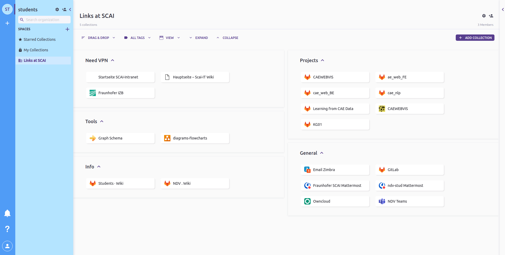

First day
Meet Kathrin get the login details (WASA, ZIMBRA, SIGMA, MATTERMOST, Gitlab)
Login to your account (WASA) from PC in the student room
Login to your Zimbra (Mailbox)
Request IT for Gitlab activation
Get the student room key
Apply for ID-card
Ask Prof. Jochen (Mail) to add in NDV GitLab after your Gitlab is activated
Prerequisite
In order to work on the project in a systematic way you need to know
Git
Latex
Markdown
Visual Studios
Contact
IT issues, “SCAI Trouble Ticket System” otrs@scai.fraunhofer.de;
Non-technical details like room key, filing the work timing (AZk&ZEB) and vacation, “Kathrin Viertel” kathrin.viertel@scai.fraunhofer.de; or “Ute Langer” ute.langer@scai.fraunhofer.de;
Supervisor, “Anahita Pakiman” anahita.pakiman@scai.fraunhofer.de
General
Access to Toby, link summary!
Add them to related GitLab project
Follow how to on NDV
Make a wiki on the project your working
Make a calendar for your working time through Zimbra (third tab inside Zimbra)
Until you have the ID-card request Kathrin/Supervisor to provide you the gate pass
Ask the other student assistants in case of organizational/technical queries
Toby
Toby is the collection of links that is handy than bookmarks
Install toby, since you have been shared with Links to be used, you should find a similar page as shown 
IT
Workt time reporting
You should submit your working time at the end of each month
AZK which is filled manually, signed, and submitted to Kathrin either Hard/soft copy
Another is Web-Zeb, which is filled digitally on sigma
You should fill the time in round numbers example:- if you worked for 6hours 30minutes fill as 6.5 hours.
Also before working for next month check ZEB that how many hours is been assigned for you for the current month.
WASA
This is used to login to your work account on the PC or on the laptop provided to you
Zimbra
This is your mailbox as well as contains a calendar that has to share with your supervisor
Mattermost
This is the communication platform with other colleagues and supervisor
Gitlab
Gitlab contains your project and previous projects
Git over SSH only works with VPN, because it requires access to Port 22 (SSH). You can only use git over HTTPS with the password every time you clone/push.
Remote: GitLab: You are not allowed to push code to protected branches on this project. To https://gitlab.scai.fraunhofer.de/ndv/research/automotive/cae_web.git ! [remote rejected] master -> master (pre-receive hook declined). So you created a protected branch. By default, only maintainers can submit to protected branches. You can check the settings in your project: https://gitlab.scai.fraunhofer.de/ndv/research/automotive/cae_web/-/settings/repository
Always create a separate branch and push the code. Then request for merge to your supervisor.
Teams
You will be using Teams for calls and meetings. Don’t chat or use it for communication apart from meetings.
How to work
Add working days to the shared calendar (You can choose your days)
If there is any change due to exam/some other occasion inform before a week
Should inform for a vacation before 3 weeks, also have to fill the vacation request form
Fix a meeting at the end of your working hours every week to report your work and plan new tasks.
Short documentation
Present your code
Maintain a meeting note under project wiki, example
Use KanBan
If you don’t know something ask, there isn’t any bad, wrong, or stupid question
Check the mails (Zimbra) often
If there is a technical doubt you can always ask through Mattermost to your supervisor
Coding
Use visual studio as IDE (python, latex, markdown)
PEP8 - Style Guide for Python Code (Extension available at VS code)
Recommended adding on
Vim
Grammarly (Activate Grammarly to all applications)
Variable naming for
Python/other in general - snake_case
Django model
Name - UpperCamelCase
Relation - SCREAMING_SNAKE_CASE
Function - snake_case
Documentation
Keep all software related documentation in markdown
Add table of contents
Try to keep in bullets to follow sequentially
Add pictures where ever possible
Provide references if it’s been taken from another location
Have a separate code block for the code session
Keep the README.md up to date, A good example of documentation and structuring work.
Push the code at the end of each working day at our repo/the repo you have been asked to.
The documentation should help other people to replicate your work easily
Summary of useful commands link
Latex
Project sample Rename the paper.tex file into your paper name. Follow the steps below:
Make sure you use a neat Text IDE:
Use a good spell checker:
Academic Writing Check: https://github.com/devd/Academic-Writing-Check
Grammarly: https://marketplace.visualstudio.com/items?itemName=znck.grammarly
Use GIT for version control.
Make sure your Makefile is working correctly and compiles the documents
All images go to the subfolder img.
Make sure the source files for images are in the pics folder as well (unless they are huge)
Place the reviews as txt files in the folder reviews.
Place related work pdfs into the folder related work using the bitex key as the filename.
Use your initials to comment in the tex file i.e. \LV{Arent we missing X here?}